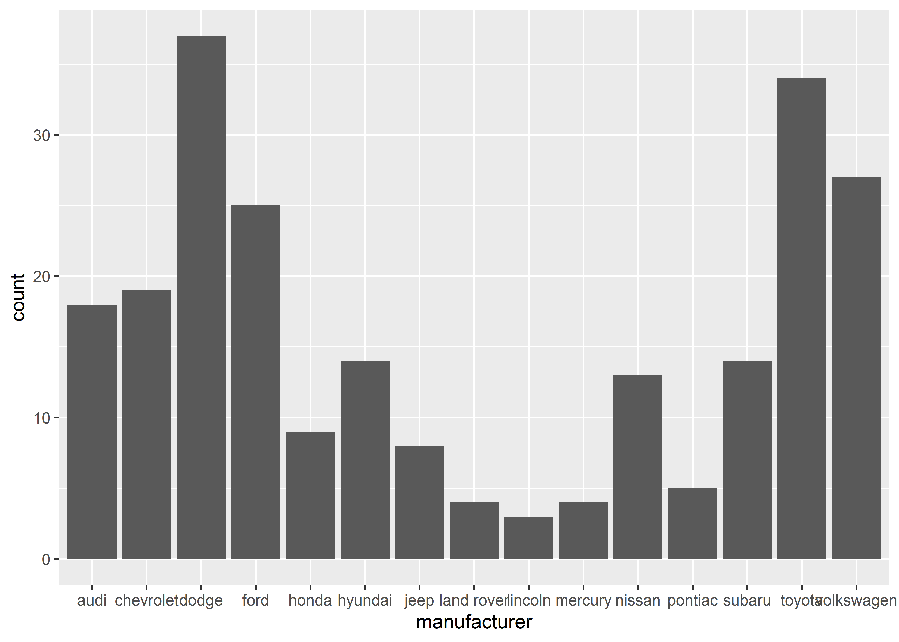

library(ggplot2)
mpg
#> # A tibble: 234 × 11
#> manufacturer model displ year cyl trans drv cty hwy fl class
#> <chr> <chr> <dbl> <int> <int> <chr> <chr> <int> <int> <chr> <chr>
#> 1 audi a4 1.8 1999 4 auto(l5) f 18 29 p compa…
#> 2 audi a4 1.8 1999 4 manual(m5) f 21 29 p compa…
#> 3 audi a4 2 2008 4 manual(m6) f 20 31 p compa…
#> 4 audi a4 2 2008 4 auto(av) f 21 30 p compa…
#> 5 audi a4 2.8 1999 6 auto(l5) f 16 26 p compa…
#> 6 audi a4 2.8 1999 6 manual(m5) f 18 26 p compa…
#> # ℹ 228 more rows2 First steps
You are reading the work-in-progress third edition of the ggplot2 book. This chapter is currently a dumping ground for ideas, and we don’t recommend reading it.
2.1 Introduction
The goal of this chapter is to teach you how to produce useful graphics with ggplot2 as quickly as possible. You’ll learn the basics of ggplot() along with some useful “recipes” to make the most important plots. ggplot() allows you to make complex plots with just a few lines of code because it’s based on a rich underlying theory, the grammar of graphics. Here we’ll skip the theory and focus on the practice, and in later chapters you’ll learn how to use the full expressive power of the grammar.
In this chapter you’ll learn:
About the
mpgdataset included with ggplot2, sec-fuel-economy-data.The three key components of every plot: data, aesthetics and geoms, sec-basic-use.
How to add additional variables to a plot with aesthetics, sec-aesthetics.
How to display additional categorical variables in a plot using small multiples created by faceting, sec-qplot-faceting.
A variety of different geoms that you can use to create different types of plots, sec-plot-geoms.
How to modify the axes, sec-axes.
Things you can do with a plot object other than display it, like save it to disk, sec-output.
2.2 Fuel economy data
In this chapter, we’ll mostly use one data set that’s bundled with ggplot2: mpg. It includes information about the fuel economy of popular car models in 1999 and 2008, collected by the US Environmental Protection Agency, http://fueleconomy.gov. You can access the data by loading ggplot2:
The variables are mostly self-explanatory:
ctyandhwyrecord miles per gallon (mpg) for city and highway driving.displis the engine displacement in litres.drvis the drivetrain: front wheel (f), rear wheel (r) or four wheel (4).modelis the model of car. There are 38 models, selected because they had a new edition every year between 1999 and 2008.classis a categorical variable describing the “type” of car: two seater, SUV, compact, etc.
This dataset suggests many interesting questions. How are engine size and fuel economy related? Do certain manufacturers care more about fuel economy than others? Has fuel economy improved in the last ten years? We will try to answer some of these questions, and in the process learn how to create some basic plots with ggplot2.
2.2.1 Exercises
List five functions that you could use to get more information about the
mpgdataset.How can you find out what other datasets are included with ggplot2?
Apart from the US, most countries use fuel consumption (fuel consumed over fixed distance) rather than fuel economy (distance travelled with fixed amount of fuel). How could you convert
ctyandhwyinto the European standard of l/100km?Which manufacturer has the most models in this dataset? Which model has the most variations? Does your answer change if you remove the redundant specification of drive train (e.g. “pathfinder 4wd”, “a4 quattro”) from the model name?
2.3 Key components
Every ggplot2 plot has three key components:
data,
A set of aesthetic mappings between variables in the data and visual properties, and
At least one layer which describes how to render each observation. Layers are usually created with a geom function.
Here’s a simple example:
ggplot(mpg, aes(x = displ, y = hwy)) +
geom_point()This produces a scatterplot defined by:
- Data:
mpg. - Aesthetic mapping: engine size mapped to x position, fuel economy to y position.
- Layer: points.
Pay attention to the structure of this function call: data and aesthetic mappings are supplied in ggplot(), then layers are added on with +. This is an important pattern, and as you learn more about ggplot2 you’ll construct increasingly sophisticated plots by adding on more types of components.
Almost every plot maps a variable to x and y, so naming these aesthetics is tedious, so the first two unnamed arguments to aes() will be mapped to x and y. This means that the following code is identical to the example above:
ggplot(mpg, aes(displ, hwy)) +
geom_point()We’ll stick to that style throughout the book, so don’t forget that the first two arguments to aes() are x and y. Note that we’ve put each command on a new line. We recommend doing this in your own code, so it’s easy to scan a plot specification and see exactly what’s there. In this chapter, we’ll sometimes use just one line per plot, because it makes it easier to see the differences between plot variations.
The plot shows a strong correlation: as the engine size gets bigger, the fuel economy gets worse. There are also some interesting outliers: some cars with large engines get higher fuel economy than average. What sort of cars do you think they are?
2.3.1 Exercises
How would you describe the relationship between
ctyandhwy? Do you have any concerns about drawing conclusions from that plot?What does
ggplot(mpg, aes(model, manufacturer)) + geom_point()show? Is it useful? How could you modify the data to make it more informative?Describe the data, aesthetic mappings and layers used for each of the following plots. You’ll need to guess a little because you haven’t seen all the datasets and functions yet, but use your common sense! See if you can predict what the plot will look like before running the code.
ggplot(mpg, aes(cty, hwy)) + geom_point()ggplot(diamonds, aes(carat, price)) + geom_point()ggplot(economics, aes(date, unemploy)) + geom_line()ggplot(mpg, aes(cty)) + geom_histogram()
2.4 Colour, size, shape and other aesthetic attributes
To add additional variables to a plot, we can use other aesthetics like colour, shape, and size (NB: while we use British spelling throughout this book, ggplot2 also accepts American spellings). These work in the same way as the x and y aesthetics, and are added into the call to aes():
aes(displ, hwy, colour = class)aes(displ, hwy, shape = drv)aes(displ, hwy, size = cyl)
ggplot2 takes care of the details of converting data (e.g., ‘f’, ‘r’, ‘4’) into aesthetics (e.g., ‘red’, ‘yellow’, ‘green’) with a scale. There is one scale for each aesthetic mapping in a plot. The scale is also responsible for creating a guide, an axis or legend, that allows you to read the plot, converting aesthetic values back into data values. For now, we’ll stick with the default scales provided by ggplot2. You’ll learn how to override them in sec-scale-colour.
To learn more about those outlying variables in the previous scatterplot, we could map the class variable to colour:
ggplot(mpg, aes(displ, hwy, colour = class)) +
geom_point()This gives each point a unique colour corresponding to its class. The legend allows us to read data values from the colour, showing us that the group of cars with unusually high fuel economy for their engine size are two seaters: cars with big engines, but lightweight bodies.
If you want to set an aesthetic to a fixed value, without scaling it, do so in the individual layer outside of aes(). Compare the following two plots:
ggplot(mpg, aes(displ, hwy)) + geom_point(aes(colour = "blue"))
ggplot(mpg, aes(displ, hwy)) + geom_point(colour = "blue")
In the first plot, the value “blue” is scaled to a pinkish colour, and a legend is added. In the second plot, the points are given the R colour blue. This is an important technique and you’ll learn more about it in sec-setting-mapping. See vignette("ggplot2-specs") for the values needed for colour and other aesthetics.
Different types of aesthetic attributes work better with different types of variables. For example, colour and shape work well with categorical variables, while size works well for continuous variables. The amount of data also makes a difference: if there is a lot of data it can be hard to distinguish different groups. An alternative solution is to use faceting, as described next.
When using aesthetics in a plot, less is usually more. It’s difficult to see the simultaneous relationships among colour and shape and size, so exercise restraint when using aesthetics. Instead of trying to make one very complex plot that shows everything at once, see if you can create a series of simple plots that tell a story, leading the reader from ignorance to knowledge.
2.4.1 Exercises
Experiment with the colour, shape and size aesthetics. What happens when you map them to continuous values? What about categorical values? What happens when you use more than one aesthetic in a plot?
What happens if you map a continuous variable to shape? Why? What happens if you map
transto shape? Why?How is drive train related to fuel economy? How is drive train related to engine size and class?
2.5 Faceting
Another technique for displaying additional categorical variables on a plot is faceting. Faceting creates tables of graphics by splitting the data into subsets and displaying the same graph for each subset. You’ll learn more about faceting in sec-facet, but it’s such a useful technique that you need to know it right away.
There are two types of faceting: grid and wrapped. Wrapped is the most useful, so we’ll discuss it here, and you can learn about grid faceting later. To facet a plot you simply add a faceting specification with facet_wrap(), which takes the name of a variable preceded by ~.
ggplot(mpg, aes(displ, hwy)) +
geom_point() +
facet_wrap(~class)You might wonder when to use faceting and when to use aesthetics. You’ll learn more about the relative advantages and disadvantages of each in sec-group-vs-facet.
2.5.1 Exercises
What happens if you try to facet by a continuous variable like
hwy? What aboutcyl? What’s the key difference?Use faceting to explore the 3-way relationship between fuel economy, engine size, and number of cylinders. How does faceting by number of cylinders change your assessement of the relationship between engine size and fuel economy?
Read the documentation for
facet_wrap(). What arguments can you use to control how many rows and columns appear in the output?What does the
scalesargument tofacet_wrap()do? When might you use it?
2.6 Plot geoms
You might guess that by substituting geom_point() for a different geom function, you’d get a different type of plot. That’s a great guess! In the following sections, you’ll learn about some of the other important geoms provided in ggplot2. This isn’t an exhaustive list, but should cover the most commonly used plot types. You’ll learn more in sec-individual-geoms and sec-collective-geoms.
geom_smooth()fits a smoother to the data and displays the smooth and its standard error.geom_boxplot()produces a box-and-whisker plot to summarise the distribution of a set of points.geom_histogram()andgeom_freqpoly()show the distribution of continuous variables.geom_bar()shows the distribution of categorical variables.geom_path()andgeom_line()draw lines between the data points. A line plot is constrained to produce lines that travel from left to right, while paths can go in any direction. Lines are typically used to explore how things change over time.
2.6.1 Adding a smoother to a plot
If you have a scatterplot with a lot of noise, it can be hard to see the dominant pattern. In this case it’s useful to add a smoothed line to the plot with geom_smooth():
ggplot(mpg, aes(displ, hwy)) +
geom_point() +
geom_smooth()
#> `geom_smooth()` using method = 'loess' and formula = 'y ~ x'This overlays the scatterplot with a smooth curve, including an assessment of uncertainty in the form of point-wise confidence intervals shown in grey. If you’re not interested in the confidence interval, turn it off with geom_smooth(se = FALSE).
An important argument to geom_smooth() is the method, which allows you to choose which type of model is used to fit the smooth curve:
method = "loess", the default for small n, uses a smooth local regression (as described in?loess). The wiggliness of the line is controlled by thespanparameter, which ranges from 0 (exceedingly wiggly) to 1 (not so wiggly).ggplot(mpg, aes(displ, hwy)) + geom_point() + geom_smooth(span = 0.2) #> `geom_smooth()` using method = 'loess' and formula = 'y ~ x' ggplot(mpg, aes(displ, hwy)) + geom_point() + geom_smooth(span = 1) #> `geom_smooth()` using method = 'loess' and formula = 'y ~ x'Loess does not work well for large datasets (it’s \(O(n^2)\) in memory), so an alternative smoothing algorithm is used when \(n\) is greater than 1,000.
method = "gam"fits a generalised additive model provided by the mgcv package. You need to first load mgcv, then use a formula likeformula = y ~ s(x)ory ~ s(x, bs = "cs")(for large data). This is what ggplot2 uses when there are more than 1,000 points.library(mgcv) ggplot(mpg, aes(displ, hwy)) + geom_point() + geom_smooth(method = "gam", formula = y ~ s(x))method = "lm"fits a linear model, giving the line of best fit.ggplot(mpg, aes(displ, hwy)) + geom_point() + geom_smooth(method = "lm") #> `geom_smooth()` using formula = 'y ~ x'method = "rlm"works likelm(), but uses a robust fitting algorithm so that outliers don’t affect the fit as much. It’s part of the MASS package, so remember to load that first.
2.6.2 Boxplots and jittered points
When a set of data includes a categorical variable and one or more continuous variables, you will probably be interested to know how the values of the continuous variables vary with the levels of the categorical variable. Say we’re interested in seeing how fuel economy varies within cars that have the same kind of drivetrain. We might start with a scatterplot like this:
ggplot(mpg, aes(drv, hwy)) +
geom_point()Because there are few unique values of both drv and hwy, there is a lot of overplotting. Many points are plotted in the same location, and it’s difficult to see the distribution. There are three useful techniques that help alleviate the problem:
Jittering,
geom_jitter(), adds a little random noise to the data which can help avoid overplotting.Boxplots,
geom_boxplot(), summarise the shape of the distribution with a handful of summary statistics.Violin plots,
geom_violin(), show a compact representation of the “density” of the distribution, highlighting the areas where more points are found.
These are illustrated below:
ggplot(mpg, aes(drv, hwy)) + geom_jitter()
ggplot(mpg, aes(drv, hwy)) + geom_boxplot()
ggplot(mpg, aes(drv, hwy)) + geom_violin()Each method has its strengths and weaknesses. Boxplots summarise the bulk of the distribution with only five numbers, while jittered plots show every point but only work with relatively small datasets. Violin plots give the richest display, but rely on the calculation of a density estimate, which can be hard to interpret.
For jittered points, geom_jitter() offers the same control over aesthetics as geom_point(): size, colour, and shape. For geom_boxplot() and geom_violin(), you can control the outline colour or the internal fill colour.
2.6.3 Histograms and frequency polygons
Histograms and frequency polygons show the distribution of a single numeric variable. They provide more information about the distribution of a single group than boxplots do, at the expense of needing more space.
ggplot(mpg, aes(hwy)) + geom_histogram()
#> `stat_bin()` using `bins = 30`. Pick better value with `binwidth`.
ggplot(mpg, aes(hwy)) + geom_freqpoly()
#> `stat_bin()` using `bins = 30`. Pick better value with `binwidth`.Both histograms and frequency polygons work in the same way: they bin the data, then count the number of observations in each bin. The only difference is the display: histograms use bars and frequency polygons use lines.
You can control the width of the bins with the binwidth argument (if you don’t want evenly spaced bins you can use the breaks argument). It is very important to experiment with the bin width. The default just splits your data into 30 bins, which is unlikely to be the best choice. You should always try many bin widths, and you may find you need multiple bin widths to tell the full story of your data.
ggplot(mpg, aes(hwy)) +
geom_freqpoly(binwidth = 2.5)
ggplot(mpg, aes(hwy)) +
geom_freqpoly(binwidth = 1)An alternative to the frequency polygon is the density plot, geom_density(). A little care is required if you’re using density plots: compared to frequency polygons they are harder to interpret since the underlying computations are more complex. They also make assumptions that are not true for all data, namely that the underlying distribution is continuous, unbounded, and smooth.
To compare the distributions of different subgroups, you can map a categorical variable to either fill (for geom_histogram()) or colour (for geom_freqpoly()). It’s easier to compare distributions using the frequency polygon because the underlying perceptual task is easier. You can also use faceting: this makes comparisons a little harder, but it’s easier to see the distribution of each group.
ggplot(mpg, aes(displ, colour = drv)) +
geom_freqpoly(binwidth = 0.5)
ggplot(mpg, aes(displ, fill = drv)) +
geom_histogram(binwidth = 0.5) +
facet_wrap(~drv, ncol = 1)2.6.4 Bar charts
The discrete analogue of the histogram is the bar chart, geom_bar(). It’s easy to use:
ggplot(mpg, aes(manufacturer)) +
geom_bar()
(You’ll learn how to fix the labels in sec-theme-axis).
Bar charts can be confusing because there are two rather different plots that are both commonly called bar charts. The above form expects you to have unsummarised data, and each observation contributes one unit to the height of each bar. The other form of bar chart is used for presummarised data. For example, you might have three drugs with their average effect:
drugs <- data.frame(
drug = c("a", "b", "c"),
effect = c(4.2, 9.7, 6.1)
)To display this sort of data, you need to tell geom_bar() to not run the default stat which bins and counts the data. However, we think it’s even better to use geom_point() because points take up less space than bars, and don’t require that the y axis includes 0.
ggplot(drugs, aes(drug, effect)) + geom_bar(stat = "identity")
ggplot(drugs, aes(drug, effect)) + geom_point()2.6.5 Time series with line and path plots
Line and path plots are typically used for time series data. Line plots join the points from left to right, while path plots join them in the order that they appear in the dataset (in other words, a line plot is a path plot of the data sorted by x value). Line plots usually have time on the x-axis, showing how a single variable has changed over time. Path plots show how two variables have simultaneously changed over time, with time encoded in the way that observations are connected.
Because the year variable in the mpg dataset only has two values, we’ll show some time series plots using the economics dataset, which contains economic data on the US measured over the last 40 years. The figure below shows two plots of unemployment over time, both produced using geom_line(). The first shows the unemployment rate while the second shows the median number of weeks unemployed. We can already see some differences in these two variables, particularly in the last peak, where the unemployment percentage is lower than it was in the preceding peaks, but the length of unemployment is high.
ggplot(economics, aes(date, unemploy / pop)) +
geom_line()
ggplot(economics, aes(date, uempmed)) +
geom_line()To examine this relationship in greater detail, we would like to draw both time series on the same plot. We could draw a scatterplot of unemployment rate vs. length of unemployment, but then we could no longer see the evolution over time. The solution is to join points adjacent in time with line segments, forming a path plot.
Below we plot unemployment rate vs. length of unemployment and join the individual observations with a path. Because of the many line crossings, the direction in which time flows isn’t easy to see in the first plot. In the second plot, we colour the points to make it easier to see the direction of time.
ggplot(economics, aes(unemploy / pop, uempmed)) +
geom_path() +
geom_point()
year <- function(x) as.POSIXlt(x)$year + 1900
ggplot(economics, aes(unemploy / pop, uempmed)) +
geom_path(colour = "grey50") +
geom_point(aes(colour = year(date)))We can see that unemployment rate and length of unemployment are highly correlated, but in recent years the length of unemployment has been increasing relative to the unemployment rate.
With longitudinal data, you often want to display multiple time series on each plot, each series representing one individual. To do this you need to map the group aesthetic to a variable encoding the group membership of each observation. This is explained in more depth in sec-collective-geoms.
2.6.6 Exercises
What’s the problem with the plot created by
ggplot(mpg, aes(cty, hwy)) + geom_point()? Which of the geoms described above is most effective at remedying the problem?One challenge with
ggplot(mpg, aes(class, hwy)) + geom_boxplot()is that the ordering ofclassis alphabetical, which is not terribly useful. How could you change the factor levels to be more informative?Rather than reordering the factor by hand, you can do it automatically based on the data:
ggplot(mpg, aes(reorder(class, hwy), hwy)) + geom_boxplot(). What doesreorder()do? Read the documentation.Explore the distribution of the carat variable in the
diamondsdataset. What binwidth reveals the most interesting patterns?Explore the distribution of the price variable in the
diamondsdata. How does the distribution vary by cut?You now know (at least) three ways to compare the distributions of subgroups:
geom_violin(),geom_freqpoly()and the colour aesthetic, orgeom_histogram()and faceting. What are the strengths and weaknesses of each approach? What other approaches could you try?Read the documentation for
geom_bar(). What does theweightaesthetic do?Using the techniques already discussed in this chapter, come up with three ways to visualise a 2d categorical distribution. Try them out by visualising the distribution of
modelandmanufacturer,transandclass, andcylandtrans.
2.7 Modifying the axes
You’ll learn the full range of options available in later chapters, but two families of useful helpers let you make the most common modifications. xlab() and ylab() modify the x- and y-axis labels:
ggplot(mpg, aes(cty, hwy)) +
geom_point(alpha = 1 / 3)
ggplot(mpg, aes(cty, hwy)) +
geom_point(alpha = 1 / 3) +
xlab("city driving (mpg)") +
ylab("highway driving (mpg)")
# Remove the axis labels with NULL
ggplot(mpg, aes(cty, hwy)) +
geom_point(alpha = 1 / 3) +
xlab(NULL) +
ylab(NULL)xlim() and ylim() modify the limits of axes:
ggplot(mpg, aes(drv, hwy)) +
geom_jitter(width = 0.25)
ggplot(mpg, aes(drv, hwy)) +
geom_jitter(width = 0.25) +
xlim("f", "r") +
ylim(20, 30)
#> Warning: Removed 138 rows containing missing values or values outside the scale range
#> (`geom_point()`).
# For continuous scales, use NA to set only one limit
ggplot(mpg, aes(drv, hwy)) +
geom_jitter(width = 0.25, na.rm = TRUE) +
ylim(NA, 30)
Changing the axes limits sets values outside the range to NA. You can suppress the associated warning with na.rm = TRUE, but be careful. If your plot calculates summary statistics (e.g., sample mean), this conversion to NA occurs before the summary statistics are computed, and may lead to undesirable results in some situations.
2.8 Output
Most of the time you create a plot object and immediately plot it, but you can also save a plot to a variable and manipulate it:
p <- ggplot(mpg, aes(displ, hwy, colour = factor(cyl))) +
geom_point()Once you have a plot object, there are a few things you can do with it:
Render it on screen with
print(). This happens automatically when running interactively, but inside a loop or function, you’ll need toprint()it yourself.print(p)Save it to disk with
ggsave(), described in sec-saving.# Save png to disk ggsave("plot.png", p, width = 5, height = 5)Briefly describe its structure with
summary().summary(p) #> data: manufacturer, model, displ, year, cyl, trans, drv, cty, hwy, fl, #> class [234x11] #> mapping: x = ~displ, y = ~hwy, colour = ~factor(cyl) #> faceting: <ggproto object: Class FacetNull, Facet, gg> #> compute_layout: function #> draw_back: function #> draw_front: function #> draw_labels: function #> draw_panels: function #> finish_data: function #> init_scales: function #> map_data: function #> params: list #> setup_data: function #> setup_params: function #> shrink: TRUE #> train_scales: function #> vars: function #> super: <ggproto object: Class FacetNull, Facet, gg> #> ----------------------------------- #> geom_point: na.rm = FALSE #> stat_identity: na.rm = FALSE #> position_identity
You’ll learn more about how to manipulate these objects in sec-programming.